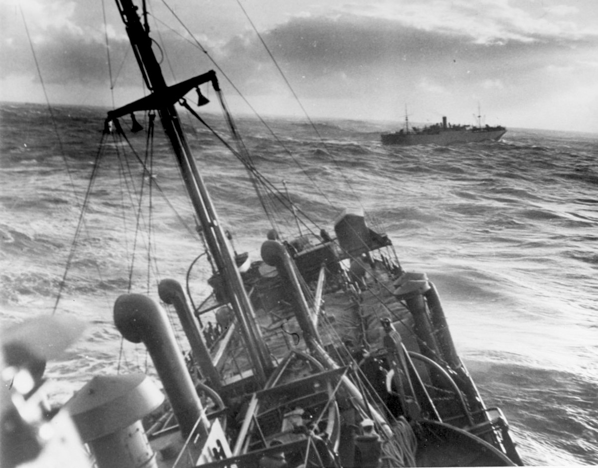

孔表
叠合纸张，筛选符合关系的位置。
战时序章 1932—1945
它带着命令、位置和航向离开港口。
到了另一端，先要有人把它抄下来。
18 节历史线索 · 4 段叙事 · 约 20 分钟阅读

1939—1945 / 先看那条航线
1939 年秋天，欧洲的战争沿着海运线铺开。英国需要通过海运接收物资与人员，德国潜艇则在航线上寻找下手的机会。商船和护航舰要走很远，船员不知道下一次警报会在什么时候响起。
船在海上走，消息也跟着走。无线电把命令、位置和航向送过海面，同时把这些信息暴露给监听者。有人只要比下一次袭击早一点读懂一份报告，航线和部署就可能有调整的余地。Bombe 的故事，要从这条海上的消息开始。
本节聚焦欧洲战事和大西洋通信。第二次世界大战也在亚洲和其他战区展开，各地有不同的时间线。大西洋航线上，护航、航空、探测、造船和人员同样决定船队能否继续前行。密码破译提供一类情报，海战还取决于这些力量怎样协同。
这份档案的四条线索
战时 / 无线电截收
在密码分析开始以前，监听员得先把电波里的信号分辨出来，再把报文抄成一行行字母。时间、呼号和通信对象也要一并记下，因为它们有时比字面内容更早露出通信网络的轮廓。
分析人员拿到的材料经常不完整：字母可能漏掉，背景还没有核清，发报时间也未必整齐。机器只能处理已经整理好的问题，不能替人判断这一行字从哪里来。截收、整理和分析必须接在一起，后面的推理才有落脚处。
1920年代起 / 从商用到军用
Enigma 起初是商用密码机，后来被德国军方采用并改进。操作员按下一个字母，电流从接线板进入转子和反射器，再沿另一条路径回来，点亮输出。每按一次键，转子就向前走一步，下一次回路已经换了位置。
军用型号又在前端加入接线板，让成对字母互换，回路因此更难追踪。看懂机器的结构只能说明它怎样工作；要读当天的通信，还得知道那一套转子、环位、起始位置和接线。不同军种、网络和时期，使用的版本与程序并不相同。
密钥 / 规则与设置
转子顺序、环位、接线板配对和起始位置一起决定一条消息会变成什么样。同一网络的操作员要用相容的设置才能互相读懂；截收人员手里只有密文，还得把这些设置找回来，消息才有可能重新开口。
日密钥、单条消息设置和报头程序彼此关联，具体规则会随时期和网络变化。一次恢复只让特定范围的通信可以继续追查，后续日期和其他部队仍要分别处理。
本节依据 S2 英国国家计算机博物馆 · BombeS4 Rutherford Journal · The Turing Bombe
波兰、英国与交接的日子
1932 / 数学进入密码分析
马里安·雷耶夫斯基、耶日·鲁日茨基和亨里克·齐加尔斯基研究军用 Enigma 时，英国 Bombe 尚未出现。1932 年末，雷耶夫斯基从字母置换的关系入手，找到了一条可以继续追踪的路。密文由此成了可以比较的结构。
法国情报渠道提供的材料让这项工作有了更多可以核对的东西。突破靠的是数学推理、通信材料和反复验证，不是一眼看穿，也不是拿到说明书就能完成。到 1939 年 7 月，这些方法被交给新的伙伴，英国后来的工作因此有了一个不同的起点。
1938 / 对操作程序的追索
德国早期的一些操作程序会重复加密消息指示符，重复本身就留下了可以比较的结构。波兰团队把这种结构做成工具：齐加尔斯基孔表用叠放筛掉可能性，Bomba kryptologiczna 则把一部分搜索交给机械装置。
这些办法依赖特定程序留下的弱点。转子和程序一变，原来的路就可能变窄。英国 Bombe 接过了这段经验，却从先猜一段明文和逻辑约束出发；名字相近，面对的问题和工作方法并不相同。
叠合纸张，筛选符合关系的位置。
联动转子装置，机械检查可能设置。
波兰 Bomba 针对重复加密的消息指示符，英国 Bombe 主要利用先猜一段明文形成的菜单关系。两种机器承接了不同的问题条件，不能只因为名称相近，就把后一台写成前一台的复制品。
1939年7月 / 华沙附近
1939 年 7 月，波兰密码局在华沙以南的 Pyry 附近接待英国和法国代表。他们展示军用 Enigma 的认识、已经形成的方法和复刻机器，迪利·诺克斯等英国代表第一次从现场接过这套工作。
交接结束后，英国同行不必再从同样的未知摸索。德国入侵波兰，波兰分析人员又在法国等地继续工作。后来英国造出 Bombe，但这台机器前面的那段数学、材料和交接，已经决定了它从哪里起步。
1939起 / 布莱切利园
1939 年，英国政府密码学校在布莱切利园开始战时工作。主楼、木屋和后来增建的楼房分开容纳不同团队；这里既是一个地点，也是一条把截收、分析、机房和情报使用者接起来的工作网络。
任务分工让人可以专注，却没有把一份消息变成一个人的工作。材料要从一个房间传到另一个房间，Bombe 后来也被部署到园区之外的站点。今天的庄园照片能告诉我们它在哪里，不能替我们听见当年的忙乱。
1912—1954 / 人物档案
艾伦·图灵是一位数学家。1936 年，他在可计算性研究中提出抽象机器模型，追问一个问题怎样被拆成明确步骤。战争期间，他在布莱切利园参与 Enigma 破译，并为英国 Bombe 的设计作出关键贡献。
纸上的模型和机房里的机器有关联，却不是同一台“图灵机器”。图灵的贡献要和波兰先驱的成果、韦尔奇曼的改进、工程制造以及操作人员的日常工作放在一起看，才会显出它怎样进入一套真正运转的系统。
1912年出生；1936—1937年可计算性论文写作与发表；1939年起参与战时密码分析；战后在英国国家物理实验室和曼彻斯特研究计算机；1950年发表《计算机器与智能》；1952年因当时歧视同性恋的法律被定罪并接受激素治疗；1954年去世。

从明文猜测到电路和鼓轮
Crib / 有根据的猜测
天气报告、固定格式的开头和反复出现的通信内容，都可能让分析人员猜到一小段明文，这段猜测叫 crib。它不是答案，只是一条要放进密文不同位置检验的假设。位置错了，文字猜错了，后面的搜索就没有办法成立。
Enigma 还有一个可以用来筛选的性质：字母不会加密成自身。把猜测和密文对齐时，只要某个位置出现同一个字母，这个位置就可以先排除。字母串因此有了第一道边界，分析人员开始知道哪些关系值得继续检查。
第 3 位：T 对 T，排除这次对齐。
通过这一步仍不表示猜测正确，还需要更多关系和检查。
本节依据 S4 Rutherford Journal · The Turing BombeS7 Crypto Museum · Enigma接线
Menu / 关系变成电路
把 crib 和密文对齐以后，字母之间的对应可以画成关系图，称为 menu，中文常译作“菜单”。报文里的相对位置决定模拟转子之间怎样连接，操作人员再按这张图给 Bombe 接线。
Bombe 让这些约束在不同转子状态下传播。假设一旦推出互相矛盾的关系，就可以被排除。图灵的思路、韦尔奇曼的改进和 BTM 的制造工作在这里接上了：机器替人筛掉大量不可能，但停下来的候选还要交给人继续检查。
把猜测文字放到密文中检验。
将字母关系组织成菜单。
让相互矛盾的设置退出搜索。
菜单列明字母之间的约束和相对位置，给机器规定要检查的问题。机器停下，只说明当前条件没有把这个候选排除；能否恢复密钥，还要看后续核验。
本节依据 S2 英国国家计算机博物馆 · BombeS4 Rutherford Journal · The Turing Bombe
1940 / 对角接线板
接线板里的配对是互易的：A 接到 G，G 也必须接回 A。戈登·韦尔奇曼把这条规矩放进机器约束，提出对角接线板，让一条推论可以沿着额外的连接返回来检查自己。
这样做减少了无效停机，也让更多菜单可以进入搜索。一次检查因此能用上更多信息，鼓轮数量并没有增加。1940 年 8 月投入工作的 Agnus Dei，通常简称 Agnes，体现了这项改进。
假设 A ↔ G，两端必须彼此一致。
配对关系示意，不是对角接线板实物结构图。本节依据 S2 英国国家计算机博物馆 · BombeS4 Rutherford Journal · The Turing Bombe
1940年3月 / Victory
首台英国 Bombe 叫 Victory，1940 年 3 月进入布莱切利园的破译工作。BTM 在莱奇沃思负责制造，哈罗德·“Doc”·基恩带领工程团队，把纸上的逻辑变成齿轮、接点和布线，还要让这套装置经得起持续运行。
典型英国 Bombe 的正面有 36 组三鼓轮，共 108 个鼓轮，分成三组工作系统。鼓轮模拟 Enigma 的转子关系，不是把 108 台完整 Enigma 摆在一起。接线能否保持可靠、机械能否稳定运转，以及停机以后怎样处理结果，都和逻辑本身一样重要。
本节依据 S2 英国国家计算机博物馆 · BombeS4 Rutherford Journal · The Turing BombeS5 Crypto Museum · Bombe
操作员、情报和后来的人
战时 / WRNS、RAF与工程人员
WRNS 操作员、RAF 技术人员和其他工作人员承担了 Bombe 网络里的日常任务。他们装配鼓轮，按菜单接线，启动搜索，记录停机，再把结果交给下一环。每一步都需要训练，也需要有人把同一件事耐心地做下去。
操作员接过机器，任务并没有因此自动完成。轮班、维修、材料流转和候选核验一起决定搜索能不能稳定进行。把这段历史只归给一位天才，会漏掉系统真正依靠的那些手。
设置鼓轮、核对接线，按要求运行。
记录停机信息，交给下一道检查。
照看接点与机械，让任务能够继续。
检查 / 解读 / 判断
一次停机只说明某个候选没有被当前条件排除。工作人员还要用检查设备核对它，推导剩余设置，再试着读出消息。crib 不合适、菜单条件不足，或者其他环节出了误差，都可能让这个候选失效。
从截收到分析、搜索、检查、解读、传递，再到判断，工作要经过几道不同的问题。消息读出来以后，还要判断它是否及时、是否可信，以及它和其他情报怎样放在一起。有些密钥没有攻破，有些报告来得太晚；海上的行动仍离不开舰船、航空、探测和人员。
机器搜索、恢复设置、读懂消息和作出判断是不同环节。Bombe 只负责其中一段筛选工作；它不会自己理解报文，也不能替使用者决定下一步。
本节依据 S2 英国国家计算机博物馆 · BombeS4 Rutherford Journal · The Turing BombeS6 加拿大退伍军人事务部 · 大西洋战役
1945以后 / 人与机器的去向
战后，保密制度和设备拆除把这套工作的轮廓藏了很久。后来公开的档案、回忆和机器重建，才让更多人的名字重新出现。约翰·哈珀带领团队重建了可工作的英国 Bombe，并在 2007 年公开揭幕，让纸上的说明重新变成可以观察的机械过程。
还要把几台常被混在一起的机器分开：Enigma 用来加密通信，Bombe 帮助搜索它的密钥，Colossus 面向另一类德国电传密码分析任务，理论图灵机则是讨论计算的抽象模型。图灵战后的研究和 1952 年遭受的法律迫害，也属于这段人的历史。
本节依据 S1 Crypto Museum · Enigma史S2 英国国家计算机博物馆 · BombeS3 MacTutor · Alan TuringS5 Crypto Museum · Bombe
现在 / 走进互动展馆
海上的命令、波兰的数学、跨国交接的知识、机房里的工程和轮班劳动，最后都落在一排排鼓轮的转动里。再看 Bombe 时，你看到的就不只是外壳，而是一群人怎样把难题拆成可以检查的步骤。
接下来可以先在整机里辨认各个系统，再到信号实验室看 Enigma 的字母怎样变化，最后用六关挑战检验自己的理解。三维模型是教学重建，实验讲的是 Enigma 回路；它们帮助你看懂原理，却不等同于完整复原战时 Bombe 的搜索流程。
本节依据 S2 英国国家计算机博物馆 · BombeS4 Rutherford Journal · The Turing Bombe